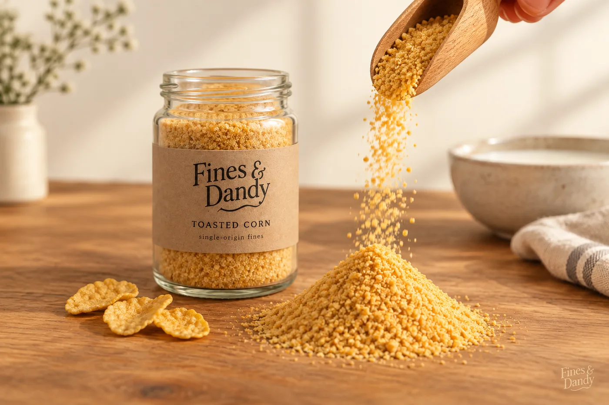
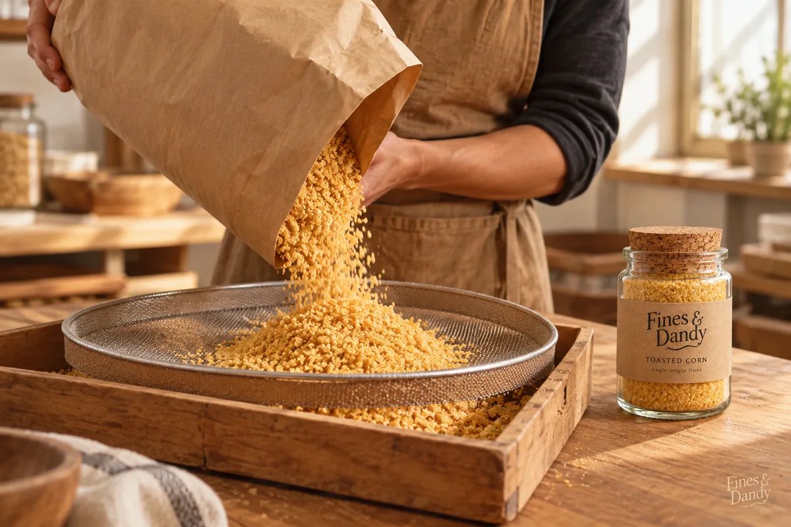

Est. the moment the bag ran out
The bottom of the bag. Finally on top.
Fines & Dandy sells cereal dust. Specifically, the crumb dust that settles at the bottom of every cereal bag, which the industry calls "fines." We harvest it, sift it, jar it by origin, and sell it to you as the main event. There is no cereal. There is only the dust.

What is a "fine"?
When a bag of cereal is shaken for weeks in trucks, shelves, and pantries, the smallest, most flavorful particles sink. Most people tip that layer into the sink. We think that layer is the whole point.
Harvested
Our recovery partners collect the settled layer from the bottom four percent of each bag. Nothing above the four percent line is ever admitted. Standards matter.
Sifted
Every batch passes through a 14-mesh screen. Whole pieces are rejected and returned to ordinary cereal, where they belong. If it crunches, it isn't ready.
Jarred by origin
Fines are never blended across parent cereals. A single jar holds a single origin, so you can taste exactly which bag your dust came from.
The current lineup
Six single-origin varieties, each jarred at peak settle. Tasting notes are recorded by our in-house palate, who asked not to be named.

Toasted Corn
"Forward notes of toasted corn, a lingering finish of bag."
The estate classic. Golden, honest, and fine enough to pass through a sieve unbothered.

Cinnamon Square
"Cinnamon sugar, warmth, and the quiet thrill of getting away with something."
The reserve. The dust everyone secretly wanted the whole time. Allocations are limited.

Chocolate Puff
"Deep cocoa, malt, stains the milk on contact."
Our dark roast. Bold, unapologetic, and visibly active in dairy.

From bag to jar, with respect
Every jar starts in a settling room, where partner bags rest undisturbed until the fines have fully committed to the bottom. Rushing the settle is the fastest way to ruin a harvest, so we don't.
Once settled, each bag is tipped by hand over a fine mesh screen. What passes through is the product. What doesn't is, respectfully, just cereal.
"We didn't invent the fines. We just stopped throwing them away."
What the spoon-forward community is saying
"I used to shake the bag to get the dust to the back of my bowl. Now the dust just arrives." Deb H., early adopter
"The Chocolate Puff turned my milk brown in four seconds. I timed it. Exceptional." Marcus T., verified purchaser
"Finally, a cereal with no interruptions." Priya S., Bottom Shelf Club member
The Bottom Shelf Club
A new single-origin jar every month, plus a pairing card and first call on reserve lots. Cancel anytime, though nobody has told us why they would.
Join from $29/month